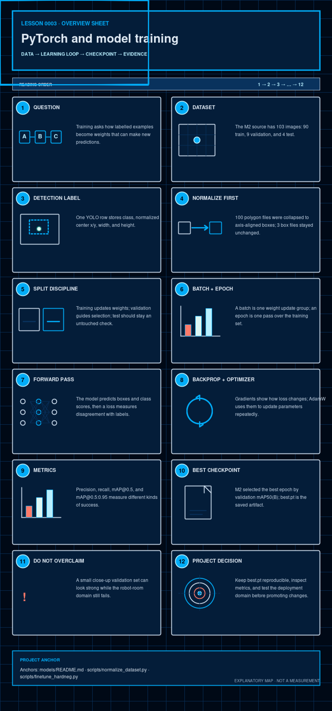

Software · AI · Robotics / Learning system
Lesson 0003 — PyTorch and model training
A detector learns from labelled examples, but the checkpoint is only as trustworthy as the data split, metric, and deployment test behind it.
How to use this lesson
Read the explanation, inspect the visual, make a prediction, and then compare it with the repository evidence. The goal is a model of this project that you can explain—not a list of framework slogans.
Prerequisites and scope
Start after Lessons 0001 and 0002. You need boxes, classes, candidates, and confidence—but no calculus. This lesson gives an operational mental model of learning; detailed convolution and backpropagation mathematics remain optional background.

The question this lesson answers
What do the training words dataset, label, epoch, validation, and checkpoint actually mean in this project? The answer is a loop: examples with targets shape the model's parameters, held-out examples measure whether the learning transfers, and a selected checkpoint becomes the next artifact.
By the end, you should be able to
- trace one image and its labels through a training update;
- separate learned parameters from human-chosen hyperparameters;
- explain why train, validation, and test data have different jobs;
- distinguish training loss from precision, recall, and mAP;
- say exactly what
best.ptproves—and what it does not prove.
Training vocabulary in software terms
The architecture is the executable structure. Its learned parameters, commonly called weights, are millions of adjustable numbers inside that structure. A hyperparameter is instead chosen by the trainer: examples are batch size, learning rate, and epoch count. A loss is a training objective that compares predictions with targets. An optimizer updates parameters using gradients, local sensitivity values calculated by backpropagation. A checkpoint saves learned parameters and metadata. Inference reads the weights but does not update them.
1. A dataset is more than a folder of pictures
Supervised learning means learning from examples that include intended answers. In object detection, the image is the input and its labelled classes and boxes are the targets. The model produces predictions, and training adjusts its parameters so those predictions better match the targets over many examples. The labels do not insert a definition of “cube” into the model; they provide repeated examples from which useful visual patterns can be learned.
A training example is an input image plus target boxes/classes. The model never receives the words “red” or “cube” directly from the pixels.
The dataset also needs coverage: changes in lighting, distance, viewpoint, background, cube placement, partial occlusion, and camera appearance. A large number of near-duplicate frames can contain less useful information than a smaller, more varied set. A background-only or negative image contains no target object; it teaches the detector that visually tempting background objects are not cubes.
Labels are evidence, not ground truth from nature
An annotation is a human or tool's claim about what is present. Missing boxes teach false negatives; boxes around the wrong object teach false positives; inconsistent box edges make localization harder. Training cannot discover and repair all annotation mistakes by itself.
2. What one YOLO detection label stores
The normalized YOLO detection format is class cx cy w h. The coordinates are fractions of image width and height, not pixels. For example, the following row means “class 1, centered near the middle, with this normalized size.”
1 0.52 0.48 0.18 0.20Class
An integer index resolved through the dataset's class-name list.
Center
cx and cy locate the box center as fractions of the image.
Size
w and h describe the box width and height as fractions.
For a 640×640 training image, multiply the horizontal values by 640 and the vertical values by 640. The example becomes center (332.8, 307.2) pixels and size (115.2, 128) pixels. One row describes one object. Multiple objects require multiple rows. A valid background-only image has no object rows, often represented by an empty label file.
Project-specific caution: the operational model documents 0: blue_cube, 1: green_cube, 2: red_cube. docs/project-definition.md still shows red/green/blue in a different order. Class IDs are arbitrary indices, so changing their order changes the meaning of every label and prediction. This conflict must be reconciled before another training run, not guessed.
3. Why normalization was necessary here
The Roboflow “YOLOv5 PyTorch” export mixed detection rows with segmentation polygon rows. The recorded M2 preparation found 3 files with five-field detection labels and 100 files with 7-or-more-field polygons. normalize_dataset.py collapses polygon vertices to an axis-aligned bounding box using min/max coordinates, clips values to [0, 1], and writes canonical names.
Two meanings of “normalization”
Coordinate normalization means expressing box coordinates as fractions from 0 to 1. This project's dataset-normalization script performs a different cleanup: it converts mixed polygon/detection records into one detection-label format and canonicalizes class names. The same word appears in both places, but the operations are not identical.
Converting a polygon to an axis-aligned box is intentionally lossy. The smallest upright rectangle enclosing the polygon includes some background and no longer preserves the object's exact outline. That is acceptable for an axis-aligned object detector, but the original segmentation shape cannot be recovered from the box.
Interactive: which transformation is safe for this detector?
Keep a five-field class cx cy w h detection row as-is.
4. Train, validation, and test are different jobs
The recorded M2 split is 90 training images, 9 validation images, and 4 test images. Training images are allowed to influence weights. Validation images influence decisions such as which epoch is “best.” Test images should remain a final, untouched check. Mixing these jobs makes a metric look more certain than the evidence supports.
The validation and test sets are tiny here. That does not make them useless; it makes uncertainty a required part of the interpretation.
The validation set does not update weights directly, but it is still part of model development because humans and checkpoint-selection logic react to its scores. Repeatedly choosing settings that look best on validation data can overfit decisions to that validation set. The test set is reserved for a later, less-biased estimate.
Data leakage occurs when information that should be held out influences training or selection—for example, placing nearly identical frames from one capture burst across train and validation. A random image split can therefore be misleading for video-like data; splitting by capture session, scene, or physical setup is often safer.
5. Batch, epoch, and update
A batch is the group of examples used to calculate one optimizer update. An epoch means the training loop has offered every training example once, usually after shuffling. With 90 training images and a batch size of 16, one epoch needs six batches: five full batches and one smaller final batch. Thirty epochs therefore revisit the same finite training set; they do not create 2,700 independent images.
A data loader usually shuffles the training order and applies random augmentation, so an image may look different on later epochs even though it comes from the same saved file. Batch size is a compromise: larger batches use more memory and average gradients over more examples; smaller batches produce noisier updates. Neither is automatically better.
The recorded recipe used batch=16 and epochs=30, with cosine learning-rate scheduling, seed=42, AMP enabled, and a single RTX 4070 Ti.
yolo detect train \\
data=.../data.yaml model=yolov5s.pt \\
epochs=30 imgsz=640 batch=16 device=0 workers=8 \\
project=runs/m2 name=m2_30ep seed=42 \\
patience=20 cos_lr=True close_mosaic=10 amp=TrueLearned parameters
Numbers inside the model that training changes: convolution filters, biases, and other weights.
Hyperparameters
Training choices such as batch=16, epochs=30, image size, optimizer, and learning-rate schedule.
The command records requested settings. Because optimizer=auto was in effect, Ultralytics selected AdamW and an effective initial learning rate of approximately 0.00143; the generic lr0=0.01 default stored in arguments should not be misread as the resolved AdamW rate used by this run.
6. The learning loop: predict, measure, update
- Load a batch: read images and labels, resize or augment them, and represent them as tensors.
- Forward pass: run pixels through the network to produce candidate boxes and class scores.
- Assign targets: decide which predictions are responsible for which labelled objects.
- Compute loss: combine localization, classification, and distributional box-regression errors into a scalar training objective.
- Backpropagate: PyTorch automatic differentiation calculates how sensitive the loss is to each parameter.
- Update: the optimizer changes the parameters, then gradients are cleared before the next step.
A loss is not a percentage and is not the same as mAP. Its scale depends on the chosen loss components and their weights. A lower loss usually means better fit to the optimization objective, but only held-out metrics and real deployment tests tell us whether the detector became more useful.
A gradient is easier to understand with one number. If a parameter is w=2.00, its gradient is +0.50, and the learning rate is 0.10, simple gradient descent gives w_new = 2.00 − 0.10×0.50 = 1.95. A negative gradient would move the parameter upward instead. Real AdamW updates also use running statistics and weight decay, but the causal idea is the same.
PyTorch gradients accumulate by default, which is why a training loop clears them—normally with optimizer.zero_grad()—before loss.backward() and optimizer.step(). Validation switches the model to evaluation behavior and disables gradient tracking; it measures without learning.
Interactive: inspect the training loop
1 · Forward: the network turns pixels into candidate boxes and class scores.
7. Learning-rate schedules, augmentation, AMP, and seeds
The learning rate controls update size. Too high can make optimization jump past useful solutions or become unstable; too low can make progress extremely slow. A schedule changes that rate during training. This run used a cosine schedule, which gradually reduces it rather than holding it constant.
Augmentation creates temporary training variants—such as scale, translation, color, flip, crop, or mosaic changes—without replacing the saved source image. The same geometric transform must be applied to the boxes. Useful augmentation teaches invariance to plausible changes; unrealistic augmentation teaches the wrong distribution. close_mosaic=10 disabled mosaic during the final ten epochs so late training used more natural single-image layouts.
AMP (automatic mixed precision) uses lower-precision arithmetic where safe to reduce memory and often accelerate GPU training. It is a computational technique, not an accuracy improvement guarantee. A random seed helps reproduce shuffling, initialization, and augmentation choices, but it does not guarantee bit-for-bit reproducibility across every GPU, library, or environment.
8. Fitting the training set is not the final goal
Generalization means performing well on new examples from the intended operating conditions. Underfitting means the model has not learned the useful pattern even on training data. Overfitting means it fits the training examples increasingly well while held-out performance stops improving or degrades. The difference between training and validation behavior is often called a generalization gap.
More epochs are therefore not automatically better. Early stopping and best-checkpoint selection watch validation evidence while training continues. They reduce wasted training and may limit overfitting, but they cannot make a tiny or unrepresentative validation set representative.
9. What the recorded metrics say—and do not say
A true positive is a prediction matched to a real labelled cube, a false positive is a prediction with no matching cube, and a false negative is a labelled cube the detector missed. Precision asks “when the detector predicts, how often is it right?”; recall asks “of the cubes present, how many did it find?” Detection mAP summarizes precision–recall behavior while also requiring sufficient box overlap. Lesson 0008 develops these definitions and threshold trade-offs carefully.
IoU (intersection over union) measures box overlap. At mAP@0.5, a match uses an IoU threshold of 0.5. mAP@0.5:0.95 averages AP over increasingly strict thresholds from 0.5 through 0.95, so it penalizes imprecise boxes more strongly. AP summarizes a precision–recall curve as the confidence threshold changes; mAP averages AP across classes. It is not simply “the percent of images detected correctly.”
Historical training record
The recorded best-epoch results in models/README.md report overall precision 0.823, recall 0.959, mAP@0.5 0.954, and mAP@0.5:0.95 0.763 on 9 validation images containing 21 labelled instances.
| Class | Precision | Recall | mAP@0.5 | mAP@0.5:0.95 |
|---|---|---|---|---|
| blue_cube | 0.875 | 0.877 | 0.982 | 0.703 |
| green_cube | 0.640 | 1.000 | 0.885 | 0.762 |
| red_cube | 0.953 | 1.000 | 0.995 | 0.823 |
Fresh audit revalidation
A CPU revalidation run made during this lesson audit with Ultralytics 8.4.75 reproduced precision 0.823, recall 0.959, and mAP@0.5 0.954; it measured mAP@0.5:0.95 as 0.755 (blue 0.695, green 0.762, red 0.808). The checkpoint's embedded train_metrics also records 0.75507. The historical table and the current revalidation are separate evidence records, not values to splice into one table. The stricter metric differs slightly from the historical 0.763, and the retained evidence does not establish a single cause for that difference.
What these numbers cannot prove
Nine validation images are useful evidence but a very small sample. High scores on them do not establish robustness to the JetRover camera, a new room, different lighting, distant cubes, or distractors. Lesson 0004 studies that domain gap; Lesson 0008 develops metric and experiment design.
10. Why “best checkpoint” is a selection rule
A checkpoint is a snapshot, commonly including model weights and sometimes optimizer state, epoch, and training metadata. last.pt usually represents the final epoch; best.pt represents the epoch favored by a configured validation rule. “Best” is therefore shorthand for “best among the observed checkpoints under this rule and validation set,” not “best in every future environment.”
For M2, the historical run record says epoch 18 was selected using validation mAP50(B). The deployed models/best.pt is a stripped inference artifact: a current load reports the epoch sentinel -1 and no optimizer state, so the epoch-18 claim comes from the retained run documentation rather than being rediscovered from a resumable checkpoint field.
The raw model graph contains 9,123,353 parameters. Fusing convolution and batch-normalization layers for inference produces 9,112,697. Those counts describe two representations of the same learned detector, not contradictory model behavior. The operational class order remains 0: blue_cube, 1: green_cube, 2: red_cube.
The checkpoint is a choice made using evidence from a validation split, not a guarantee that every new camera domain will behave the same way.
11. Pretraining, transfer learning, and fine-tuning
Training from scratch starts with untrained parameters. Transfer learning reuses features learned on a larger source task; fine-tuning continues updating those pretrained parameters for this cube dataset. That usually needs less data and compute, but it can still overfit: the model may memorize the small training conditions while failing on a new camera room. “Pretrained” describes the starting point, not proof that the final detector generalizes.
M2 was already transfer learning: it began from COCO-pretrained yolov5s.pt and updated the full model for the three cube classes. A fixed feature extractor would freeze the pretrained backbone and train only a new head; that is not the recorded M2 recipe.
The repository also records models/best_hardneg.pt as a candidate continuation from best.pt: 25 epochs at lr0=0.0005 using Roboflow examples, JetRover-room positives, and background-only distractor crops. Continuing training can reduce a known false positive, but it can also forget useful behavior or overfit a stationary scene. The candidate is therefore not the deployed engine; promotion still requires export and independent acceptance evidence.
12. Check your understanding
Why does a labelled detection dataset matter?
Which statement is correct?
What does a best checkpoint mean here?
How does validation data influence training?
Which is a data-leakage risk for camera captures?
13. Read-only exercises
- Training arithmetic: for 90 training images and
batch=16, calculate the batches per epoch and nominal updates across 30 epochs. - Label decoding: decode
1 0.52 0.48 0.18 0.20under the operational class map, then convert its box to pixels for a 640×640 image. - One update: calculate
w_newforw=2.00, gradient+0.50, and learning rate0.10. - Artifact inspection: run the read-only command below from the repository root.
.venv-m2/bin/python -c "from pathlib import Path; from ultralytics import YOLO; p=Path('models/best.pt'); m=YOLO(p); print({'bytes':p.stat().st_size, 'task':m.task, 'names':m.names, 'raw_params':sum(x.numel() for x in m.model.parameters())})"Observable result in this prepared checkout: byte count 18517947, task detect, class map blue/green/red, and raw parameter count 9123353. This proves that the local artifact loads and exposes that metadata. It does not prove accuracy, reproduce training history, or validate deployment behavior.
Checking key
ceil(90÷16)=6 batches per epoch and 180 nominal updates over 30 epochs. Class 1 is green_cube; center (332.8, 307.2) pixels; size (115.2, 128) pixels. The toy update gives w_new=1.95.
14. Explain it back
Explain this without reading: “How does one labelled image influence models/best.pt, and why can a high validation mAP still fail to predict room-camera performance?”
Use these words if helpful: target box, loss, gradient, optimizer, epoch, validation, checkpoint, domain.
What this lesson intentionally postpones
The exact YOLO target-assignment algorithm, DFL mathematics, convolution equations, and AdamW derivation are outside this applied lesson. The source guide routes to deeper theory when one of those details becomes necessary.
Lesson 0004 applies generalization and domain shift to the robot-camera failure. Lesson 0008 owns threshold selection, experimental design, data collection, leakage-safe evaluation, and fine-tuning acceptance gates. Deployment/export behavior belongs to Lessons 0005–0007.
Primary references and next lesson
- Local source guide — includes the authorized local Szeliski second-edition copy; Chapter 5 grounds supervised learning, loss, optimization, regularization, CNNs, and generalization.
- Deep Learning, Chapter 8: Optimization for Training Deep Models — separates empirical training objectives from expected generalization.
- Dive into Deep Learning: Underfitting, Overfitting, and Model Selection — train/validation/test roles and capacity.
- Ultralytics performance-metrics guide — definitions and interpretation of precision, recall, IoU, and mAP.
- PyTorch optimization tutorial — the forward, loss, gradient, and optimizer loop.
- PyTorch automatic differentiation tutorial — gradients, accumulation, and disabling gradient tracking.
- PyTorch transfer-learning tutorial — full fine-tuning versus a fixed feature extractor.
- Project README and the linked canonical documentation.
- Curriculum plan — scope, teaching contract, and project truth.
- Lesson 0004 — Why the Model Fails on the Robot: compare training-domain metrics with live JetRover evidence.